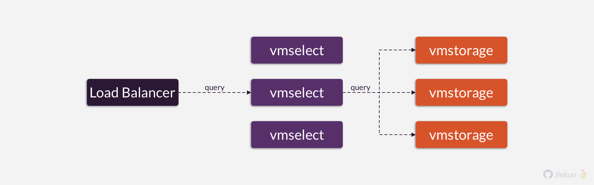
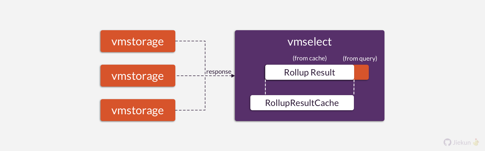
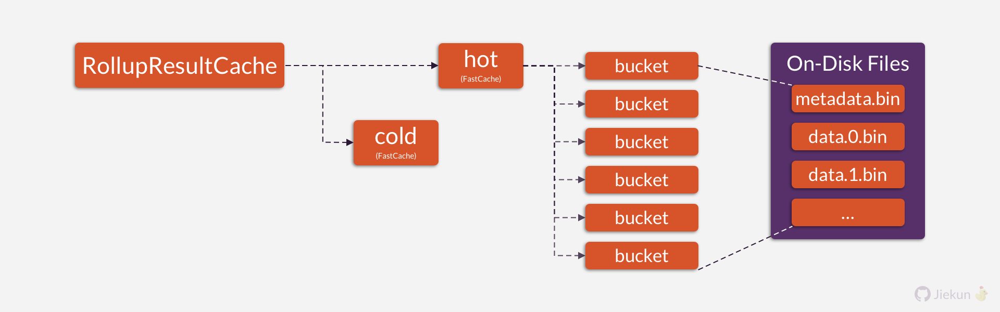

VictoriaMetrics 中的持久化数据结构 (Part 2): vmselect
vmselect 简介
vmselect 是 VictoriaMetrics 的查询组件，通常位于 Load Balancer 后面，负责向多个 vmstorage 节点发送查询请求，并将数据聚合、缓存、返回给用户。

Rollup Result Cache
在一次时序数据库的查询中，通常会涉及许多时间序列和大量数据点，这些数据点必须先聚合才能展示。Rollup 通常指的是一个按照时间维度聚合好的时间序列，形成一个 Rollup 除了数据点，还需要 Interval 和 Aggregation 方法，例如 sum、max。
在 vmselect 中，Rollup Result 会被缓存到 RollupResultCache 中。以查询时间范围 [a, b] 的 PromQL 为例，如果在 [a+5, b+5] 的时间范围上再次查询相同的 PromQL：
- RollupResultCache 可以用于填充部分时间范围（[a+5, b]）上的结果；
- 时间不重叠的部分（[b+1, b+5]）继续向 vmstorage 查询。
vmselect 会收集、聚合多个 vmstorage 返回的结果，并将结果与 RollupResultCache 进行合并，最终形成新的 Rollup Result 返回，并更新 RollupResultCache。

虽然文章的标题是“持久化数据结构”，但是我们还是会简单介绍部分内存中的数据结构。RollUpCacheResult 通常存在于内存中，它的特点主要为：
- 由 2 个 Key-Value 数据结构组成，分别代表热数据和冷数据；
- 冷数据会定期（过去 60 秒内访问概率低于 10%）被清空，热数据定期降级为冷数据；
- 冷数据中被查询到的内容可以回到热数据中。
FastCache
如果 vmselect 需要退出，RollupCacheResult 中的热数据会被持久化到磁盘中。代表热数据的 Key-Value 数据结构名叫 FastCache，本节介绍它的持久化。
FastCache 由多个 Bucket 组成，每个 Bucket 由一个 Ring Buffer 和一个 Hash Index 组成。Ring Buffer 负责存储 Key-Value Pairs，而 Hash Index 则记录了 Key 对应的数据在 Ring Buffer 中的位置，作为索引。

在持久化时：
- 所有的 Ring Buffer 通过 Snappy 压缩后写入
data.n.bin文件； - Buckets[0] 的 Ring Buffer 长度（也代表所有 Bucket 的 Ring Buffer 长度）存入
metadata.bin文件，用于在下次启动时验证持久化数据是否完整。
最终持久化到磁盘的文件目录格式如下：
./rollupResult
├── data.0.bin
├── data.1.bin
├── data.2.bin
├── data.3.bin
└── metadata.bin
Further Reading
你可以在以下位置找到关键的代码：
- Search RollupResultCache: https://bit.ly/3ylPXiC
- Query vmstorage for missing results: https://bit.ly/3wDZUrb
- Merge cached result and vmstorage results: https://bit.ly/4becexo
- Save RollupResultCache to disk: https://bit.ly/4bk1PQX
- Write vmstorage temporary data to disk: https://bit.ly/3WHnHB1